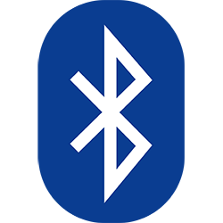
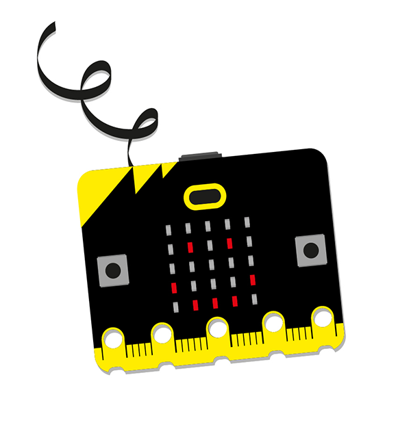
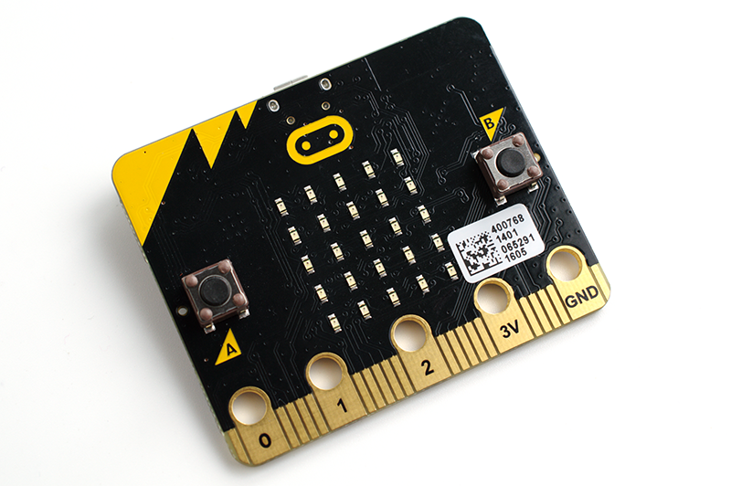

Diccionario
Alimentación

Conectividad

1. Diseña tu placa robótica
Imagina que vas a diseñar la placa robótica con la que vamos a trabajar en clase.
- Haz una lista de los sensores y actuadores que te gustaría que llevase.
Lumen dice ¿Necesitas ayuda con los sensores y actuadores?
Para saber qué elementos podría llevar la placa echa un vistazo a esta tabla y elige los que quieras:
| Sensores | Actuadores |
| Pulsadores | LEDs |
| Sensor de temperatura | Altavoz |
| Sensor de luz | Motores |
| Acelerómetro | |
| Joystick | |
| Micrófono |
- Piensa en otros componentes que sean necesarios para que la placa funcione, o en componentes que te gustaría que llevase (conectividad, procesamiento, alimentación…).
 Definición:
Definición:
Componentes que permiten que el aparato se cargue de electricidad.
Ejemplo:
La placa tiene un conector de alimentación de 5 V.
 Definición:
Definición:
Capacidad para conectarse o hacer conexiones y transmitir o recibir información.
Ejemplo:
La placa robótica tiene conectividad vía Bluetooth.
Lumen dice ¿Necesitas ayuda con los otros componentes?
Aquí cuentas con un listado de otros componentes que podrían ser necesarios:
- Microcontrolador.
- Conexión por USB.
- Conexión por bluetooth.
- Alimentación (batería, pilas...).
- Pon en común con tu compañero o compañera de clase lo que habéis realizado.
- Si te gustan algunos de los componentes que han incorporado tus compañeros y compañeras los puedes añadir a la lista de tu diseño.
- En pareja, clasifica los componentes que has añadido a tu placa: sensores (S), procesamiento (P), actuadores (A), conectividad (C), alimentación (AL).


Después del accidente sufrido por nuestro robot esto es lo que ha quedado de él.
En las siguientes actividades vamos a identificar sus componentes, ¿te animas?
2. Exploramos nuestra placa robótica
Por parejas cogemos una placa microcontroladora que os dará vuestro profesor o profesora
Explora la placa y trata de identificar sus componentes.

Pasos a realizar:
- Observa detenidamente la placa por la cara frontal.
- Observa detenidamente la placa por la cara trasera.
- Realiza un dibujo de la placa por ambas caras.
- ¿Qué componentes puedes identificar? Nómbralos en el dibujo con una flecha.
- Intenta adivinar la función de otros componentes, no pasa nada si te equivocas, luego veremos cuál es su función.
- Señala qué componentes lleva la placa de los que tú habías pensado para tu diseño.
- Clasifica los componentes en sensores, procesamiento, actuadores, conectividad.
- ¿Puedes identificar el nombre de la placa robótica de nuestro robot? ¿Puedes encontrar su web oficial?
3. Identifico lo que tengo que hacer
Ya conoces qué reto te proponemos alcanzar y te acabamos de plantear una actividad que te acercará a la meta. Pero para tener éxito en tu camino, necesitarás algunas estrategias que te servirán para esta y otras tareas parecidas. Las irás descubriendo en un diario que llamamos tu Diario de Aprendizaje.
En esta ocasión te proponemos que lo abras y completes el PASO 1 del Diario de aprendizaje antes de empezar la actividad que acabas de leer!
Haz clic aquí para descargar tu Diario de Aprendizaje
Recuerda:
- Pregunta a tu profesor o profesora si la rellenarás en papel o en el ordenador.
- Si la rellenas en el ordenador, ¡no te olvides de guardarla en tu ordenador cuando la termines!
¡Ánimo, que lo harás genial!
4. Corrige los componentes de la cara frontal
Pon en común con tu grupo cuáles son los componentes que tiene la placa en la cara frontal.
¡Vamos a comprobarlo! Cuando terminéis de decir los componentes que habéis identificado, id pulsando la siguiente imagen interactiva para comprobar si habéis acertado.
Corrige el dibujo de la placa que hiciste ayudándote de la imagen interactiva.
Lumen dice ¿Necesitas una imagen con los componentes de la cara frontal de la placa?
Aquí tienes la imagen con los componentes de la cara frontal.

5. Corrige los componentes de la cara trasera
Pon en común con tu grupo cuáles son los componentes que tiene la placa en la cara trasera.
¡Vamos a comprobarlo! Cuando terminéis de decir los componentes que habéis identificado, id pulsando la siguiente imagen interactiva para comprobar si habéis acertado.
Corrige el dibujo de la placa que hiciste ayudándote de la imagen interactiva.
Lumen dice ¿Necesitas una imagen con los componentes de la cara trasera de la placa?
Aquí tienes la imagen con los componentes de la cara trasera.

Kardia dice ¿Sabes cómo se llama nuestra placa?
El modelo de nuestra placa robótica es micro:bit, puedes encontrar mucha información sobre ella en su página oficial microbit.org
6. ¿He sido capaz de hacer la actividad?
¡Ya has terminado la actividad de Explorar la placa robótica! Los comienzos te han podido crear miedos e inseguridades a la hora de realizarla.
Si completas el PASO 2 del Diario de aprendizaje (¿Seré capaz de hacerlo?) podrás ver que tus sentimientos son habituales cuando empezamos una tarea y reflexionar sobre ello te ayudará a que en las próximas actividades esa inseguridad sea cada vez menor.
Recuerda:
- Pregunta a tu profesor o profesora si la rellenarás en papel o en el ordenador.
- Si la rellenas en el ordenador, ¡no te olvides de guardarla en tu ordenador cuando la termines!
¡Ánimo, que lo harás genial!
Motus dice ¿Cómo ha ido tu confianza en esta actividad?
Cuando tenemos que hacer alguna actividad podemos tener dudas sobre si seremos capaces de hacerlo.
Para poder vencer a estos miedos en las nuevas actividades que tengas que hacer sigue estos consejos:
- Hay cosas que haces muy bien. Úsalas para hacer la actividad.
- Hay cosas que te cuestan un poco hacerlas. Inténtalo y cree en ti mismo o en ti misma. Seguro que te sorprende lo que puedes conseguir.
- Hay cosas que son muy difíciles. Fíjate en algún ejemplo, pregunta a tu compañero o compañera. Pide ayuda al profe.